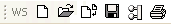
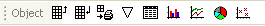
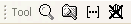
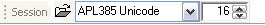
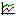
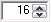

The Session toolbars are contained by four separate CoolBand objects, allowing you to configure their order in whichever way you choose.




The Session tool bars
The bitmaps for the buttons displayed on the session tool bar are implemented by three ImageList objects owned by the CoolBar ⎕SE.cbtop. These represent the ToolButton images in their normal, highlighted and inactive states and are named iln, ilh and ili respectively.
These images derive from three bitmap resources contained in dyalog.exe named tb_normal, tb_hot and tb_inactive. The statements that create these ImageList object in function BUILD_SESSION in BUILDSE.DWS are as follows.
:With '⎕SE.cbtop'
'iln'⎕WC'ImageList'('MapCols' 0)('Masked' 1)
'iln.bm'⎕WC'Bitmap'('' 'tb_normal')('MaskCol'(192 192 192))
'ilh'⎕WC'ImageList'('MapCols' 0)('Masked' 1)
'ilh.bm'⎕WC'Bitmap'('' 'tb_hot')('MaskCol'(192 192 192))
'ili'⎕WC'ImageList'('MapCols' 0)('Masked' 1)
'ili.bm'⎕WC'Bitmap'('' 'tb_inactive')('MaskCol'(192 192 192))
:EndWithClear Workspace | Executes the system operation [WSClear] which asks for confirmation, then clears the workspace. |
Load Workspace | Executes the system operation [WSLoad] which displays a file selection dialog box and loads the selected workspace. |
Copy Workspace | Executes the system operation [WSCopy] which displays a file selection dialog box and copies the (entire) selected workspace |
Save Workspace | Executes the system operation [WSSaveas] which displays a file selection dialog box and saves the workspace in the selected file. |
Re-Export Workspace | Executes the system operation [ReExport] which re-exports the workspace using the settings, parameters and options that were previously selected using the Create Bound File dialog. |
Print Workspace | Executes the system operation [PrintFnsInNS] that prints all the functions and operators in the current namespace. |
Copy Object | Executes the system operation [ObjCopy] which copies the contents of the current object to the clipboard. |
Paste Object | Executes the system operation [ObjPaste] which copies the contents of the clipboard into the current object, replacing its previous value. |
Print Object | Executes the system operation [ObjPrint] that prints the current object. |
Edit Object | Executes the system operation [Edit] which edits the current object using the standard system editor. |
Edit Array | Executes a defined function in ⎕SE that edits the current object using the Array Editor (Unicode Edition) or a spreadsheet-like interface based upon the Grid object (Classic Edition). See Array Editor. |
Barchart | Executes a defined function in ⎕SE that displays the value of the current object in a Barchart. |
|  Linechart | Executes a defined function in ⎕SE that that displays the value of the current object in a Linechart. |
Piechart | Executes a defined function in ⎕SE that that displays the value of the current object in a Piechart. |
Scatterplot | Executes a defined function in ⎕SE that that displays the value of the current object in a Scatterplot. |
Explorer | Executes the system operation [Explorer] which displays the Workspace Explorer tool. |
Search | Executes the system operation [WSSearch] which displays the Workspace Search tool. |
Line Numbers | Executes the system operation [LineNumbers] which toggles the display of line numbers in edit and trace windows on and off. |
Clear all Stops | Executes the system operation [ClearTSM] which clears all ⎕STOP, ⎕MONITOR and ⎕TRACE settings |
Copy Selection | Executes the system operation [Copy] which copies the selected text to the clipboard. |
Paste Selection | Executes the system operation [Paste] which pastes the text in the clipboard into the current window at the insertion point. |
Recall Last | Executes the system operation [Undo]which recalls the previous input line from the input history stack |
| Recall Next | Executes the system operation [Redo] which recalls the next input line from the input history stack. |
Load Session | Executes the system operation [SELoad] which displays a file selection dialog box and loads the selected Session File. |
Select Font | Selects the font to be used in the Session window. |
|  Select Font Size | Selects the size of the font to be used in the Session window. |